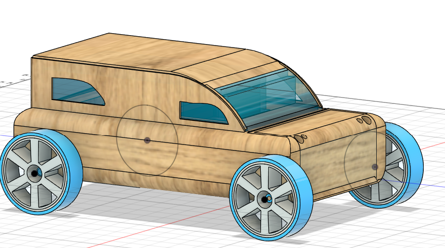

.PNG)
Automoblox Mini C11
The Automoblox Mini C11 is for kids education by leveraging its modular design, which features interchangeable parts that can be mixed and matched with components from other Automoblox mini-vehicles
Visual Analysis
Our visual analysis was that the van shows alot of emphasis through how the color brown and blue and very contrast to eachother, and how the window is almost as big as the body of the car. the porportions of the van are also uneven from every piece except for the male, and female people aswell as the tires. the body and window each have uneven pieces.
Funtional Analysis
You can almost completely disasemble every piece from the van. Including the front, main body, back, window and even the tires. You can also take apart the people and Tire rubber. Its a very creative and unique toy and isnt like anything ive seen before. The way were going to assemble it is using the same parts it already has and add more. such as a spoiler and more detail to tires. like us adding an axel to make the tires turn 360. and the manufacutring wont be to hard seeing as all the pieces are plastic and wood. and according to the chart of parts we dont have alot of plastic pieces only the window tires and connectors. we can also use a cheaper wood too really make a cheaper and still fun option so we can mass produce our product better. our goal is to make a cheap, easy to make, and fun childrens toy and with these improvements to an already amazing design it will be that much easier.
Structural Analysis
We have examined every piece of the car and heres our analysis. The window is made out of thin plastic instead of glass to prevent it from breaking. The tires are put on like lego pieces to keep it on and secure but still removable. The body of the car has about 2 connectors and to each connector is a piece to connect too. the connectors are also able to be taken off and put back on. Inside of 2 of the 3 body pieces have 4 shapes inside of them. a star, triangle,square, and circle. inside each shape is a person either male or female. on the bottom of each person is a corresponding shape to the one in the body. the car is pretty basic aside from being able to detach.

Tolerences
We have multiple tolerances used on this improved car. for the base model in fusion WITHOUT improvements we only used rigid to make everything stay in place. Rigid was our most common joint we had used. Our rigid joint has 0 degrees of freedom. the reason we used this is because first we had to model before making the functions. next for the imporved car we used more rigid joints. And ontop of the rigid joints we used we also used revolute joints. We used this joint for the tire axels and it makes them turn the way we need. revolute joints have 1 degree of freedom due to it moving around a single axis. So in summary the first car model only used rigid type of joints. And the improved car model used more rigid joints and revolute joints.
LIES Manufactoring Process
My team and I had a hard time with the manufacutring process. But with the amazing team LIES anything is possible. first things first for the satrt we had sketched out the orignial car. every inch and detail was sketched and measured. next we started to model it in fusion. and that took about a week or 2. then while our team leader work on other documents we started the website and exploded views, etc. next we started designing 9 improvement ideas and made a design matrix to figure out which 3 we would use. after we found out the 3 improvements we would use we had started our fusion process to design it. our fusion person was hard at work and through our countless technical difficulties we still managed to do our work effectively. and do our work to the best of our ability.
LIES Improvements
The improvements that we have made to the car were big but small at the same time. For our cosmetic improvement we have added a spoiler to the back of the car. it adds more of a unique look to the vehichle and makes it look more modern. Next we have upgraded the window. the window used to be a big block of plastic but we have added wooden borders and a windshield to make it more refined. And for our last improvement we have given the tires an axel. Which gives the tire more freedom to move free or as i would say, to move in a 360 motion. It gives more life to the car and will increase the entertainment people will have with the car.

LIE Overview
Here at LIES our jobs are to design, and improve already existing ideas. This automoblox car is a prime example of what LIES stands for, Inovation. Through all the hardships and technical difficulties that hinder our work we still figured out a way to build this. And thats what LIES is about, overcoming, and pushing head first through our obstacles. This van took us 4 weeks to complete and around the 3rd and 4th week we had the most trouble. The fusion model wouldnt work, some pieces were hard to design but our fusion worker pushed through. And then while creating the website some things would shrink, or enlarge, text wouldnt show but our hard working web designer also pushed through that. So in all i feel like this Job was a success and fun to fufill. through the hard to the easy this project was fun to the end. And thats what LIES is all about.